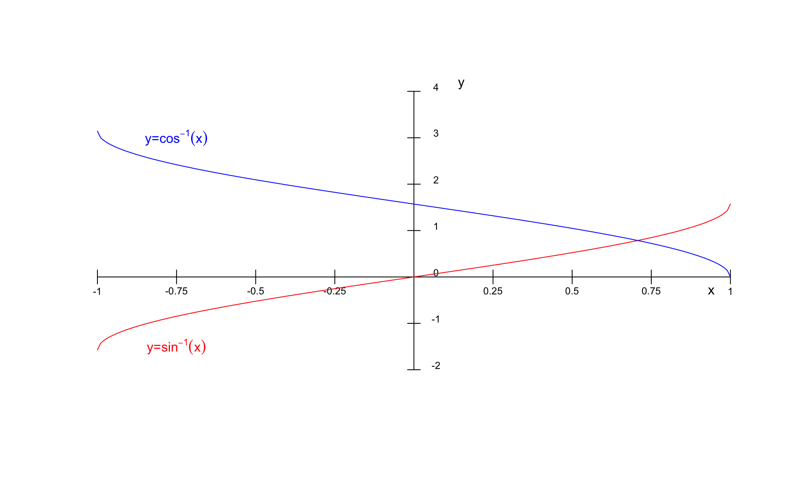

Correspondencia entre conjuntos
Si \("A"\) y \("B"\) son conjuntos cualesquiera, se llama correspondencia de \(A\) en \(B\) a todo criterio o ley que asocia elementos de \("A"\) con elementos de \("B"\).
Si el nombre del criterio es \("f"\), para expresar que \("f"\) es una correspondencia de \("A"\) en \("B"\) escibimos \(f:A\longrightarrow B\).
De \("A"\) se dice que es el conjunto inicial de \("f"\) de \("B"\) se dice es el conjunto final de \("f"\)
En el conjunto inicial “A” puede haber elementos (177) a los que “f” no les asocia nungún elemento de “B”.
En el conjunto inicial “A” puede haber elementos (Pato) a los que “f” les asocie varios elemento de “B”.
En el conjunto final “B” puede haber elementos (5 y Luna) que no corresponden a ningún elemento de “A”.
En el conjunto final “B” puede haber elementos (Mesa) que corresponden a varios elementos de “A”.
Que quede clarito: en la definición de correspondecia no se impone ninguna restricción o traba al criterio \("f"\) que asocia elementos de \("A"\) con elementos \("B"\); por tanto queda definida una correspondencia de \("A"\) en \("B"\) en el mismo instante en que se establece un criterio o ley que asocie elemnetos de \("A"\) con elementos de \("B"\), aunque ese criterio sea muy absurdo o chiripitíflautico.
Correspondencia de conjuntos
Si \(x \in A\) para referirnos al elemento de \("B"\) que \("f"\) asocia a \("x"\), usaremos la notación \("f(x)"\), que los profesionales leen efe de x, pero tú debes leer imagen de x según f.
¡Están condenados al fracaso los principiantes que se empecinen en leer como profesionales!, pues tras la notación \(f(x)\) hay 5 protagonistas, y el cerebro debe estar simultáneamente pendiente de todos ellos:
El conjunto \("A"\), que es protagonista invisible, pues \("A"\) no parece por ningún lado en la notación \("f(x)"\) … ¡pero está!.
El conjunto \("B"\), también invisible
La ley \("f"\) que asocia elementos de \("A"\) con elementos de \("B"\); es protagonista visible, pues en la notación \("f(x)"\) hay una \("f"\).
El elemento \("x"\) del conjunto \("A"\); también es visible, pues en la notación \("f(x)"\) hay una \("x"\).
El 5° protagonista es un elemento de \("B"\), pero no un elemento de cualquiera de \("B"\), el 5° protagonista es el elemento de \("B"\) que la ley \("f"\) asocia a \("x"\), y para denotarlo nadie ha inventado una notación más clara y concisa que \("f(x)"\), introducida por Euler en 1734.
Función real de variable real
¿No es fascinante cómo una función real de variable real puede describir el comportamiento de tantas situaciones en el mundo real, conectando conceptos abstractos con la realidad tangible?
Llamamos función real de variable real a toda correspondencia \(f: \mathfrak{R} \longrightarrow \mathfrak{R}\); o sea, una función real de variable real es una ley o criterio \(f\) que asocia números reales con números reales.
Se dice que \(f: \mathfrak{R} \longrightarrow \mathfrak{R}\) es una función real porque su conjunto final es \(\mathfrak{R}\) se dice que \(f\) es de variable real porque su conjunto inicial es \(\mathfrak{R}\)
Para expresar que el número real \(x \in \mathfrak{R}_{inicial}\) puede ser el que queramos, se dice que \(x\) es una variable independiente; y para expresar que el número real \(f(x) \in \mathfrak{R}_{final}\) que \(f\) asocia a \(x\) escapa por completo a nuestro control, pues es \(f\) quien decide el valor de \(f(x)\), se dice que el número real que denotamos \("f(x)"\) es una variable dependiente.
Dominio de definición de una función
El dominio de definición de la \(f:\mathfrak{R} \longrightarrow \mathfrak{R}\) se denota Dom(f), y es el subconjunto de \(\mathfrak{R}_{inicial}\) formado por los puntos a los que \(f\) les asigna imagen en \(\mathfrak{R}_{final}\):
\[
Dom(f)= \{ x\in \mathfrak{R} \;| \;f(x)\in \mathfrak{R}\}
\]
Si \(f(a) \in \mathfrak{R}\) se dice que \(f\) esta definida en el punto \("a"\), y si \(f(a) \notin \mathfrak{R}\) se dice que \("f"\) no está definida en “a”.
Funciones reales de variable real
Una función real de variable real \(f:A \subset \mathfrak{R} \rightarrow \mathfrak{R}\) es una regla que asigna a cada elemento de un primer conjunto \(A\), un único elemento de un segundo conjunto \(\mathfrak{R}\). Las funciones son relaciones entre los elementos de dos conjuntos.
Se llama dominio de la función \(f\) al conjunto de valores para los cuales la misma está definida
\[Dom\ f = A = \{x\in \mathbb R| \exists! y \in \mathbb R: f(x)=y\}\] El conjunto de todos los resultados posibles de una función dada se denomina rango, imagen o codominio de esa función.
\[Im\ f = \{y\in \mathbb R| \exists x \in \mathbb R: f(x)=y\}\]
Funciones polinómicas

Funciones logarítmicas

Funciones trigonométricas
Funciones trigonométricas

Funciones trigonométricas

Funciones trigonométricas

Funciones de Activación Esenciales en Machine Learning: ReLU, Sigmoide y Tangente Hiperbólica
En el fascinante mundo del machine learning, y particularmente en las redes neuronales, las funciones de activación juegan un papel crucial. Estas funciones son responsables de introducir no linealidad en el modelo, permitiéndole aprender patrones complejos y representar relaciones más allá de las que un modelo lineal podría capturar. Para aquellos que exploran un curso de cálculo, comprender cómo estas funciones se construyen y cómo sus propiedades matemáticas impactan el aprendizaje automático es fundamental.
Las tres funciones de activación más comunes y, a menudo, las primeras que se estudian son la Unidad Rectificadora Lineal (ReLU), la función sigmoide y la tangente hiperbólica (tanh).
Función ReLU (Unidad Rectificadora Lineal)
La función ReLU es sencilla: devuelve el mismo valor si es positivo y cero si es negativo.
La función ReLU es una de las funciones de activación más populares y se ha convertido en el estándar para muchas arquitecturas de redes neuronales profundas. Su simplicidad es su mayor fortaleza.
Definición Matemática: La función ReLU se define como: \(f(x) = \max(0, x)\)
Esto significa que si la entrada \(x\) es mayor que cero, la salida es \(x\). Si la entrada es menor o igual a cero, la salida es cero.
Derivada: La derivada de la función ReLU es: \(f'(x) = 1\) si \(x > 0\) \(f'(x) = 0\) si \(x < 0\) (La derivada en \(x=0\) no está definida, pero en la práctica se suele asignar un valor, como 0 o 1).
Relación con el Cálculo: La facilidad para calcular su derivada es una gran ventaja en el entrenamiento de redes neuronales, ya que el descenso de gradiente, el algoritmo principal de optimización, depende del cálculo eficiente de derivadas (gradientes). La simplicidad de la derivada de ReLU ayuda a mitigar el problema del gradiente desvanecedor para valores positivos, lo que acelera el entrenamiento.
Ventajas:
- Eficiencia Computacional: Es muy simple de calcular.
- Atenúa el Problema del Gradiente Desvanecedor: Para entradas positivas, el gradiente es 1, lo que permite que los gradientes fluyan sin problemas.
- Escasez de Activación: Introduce “escasez” en la red, lo que puede llevar a una representación más compacta y eficiente.
Desventajas:
- Problema del “Neurona Muerta” (Dying ReLU): Si una neurona ReLU produce consistentemente una salida de 0 (por ejemplo, si sus entradas siempre son negativas), los gradientes que fluyen a través de ella serán 0, y la neurona dejará de aprender.
Función de Activación Sigmoide (Logística)
La función sigmoide comprime cualquier valor de entrada en un rango entre 0 y 1. Es ideal para cuando necesitas interpretar una salida como una probabilidad.

La función sigmoide, también conocida como función logística, fue una de las primeras funciones de activación populares, especialmente en las capas de salida de modelos de clasificación binaria.
Definición Matemática: La función sigmoide se define como: \(f(x) = \frac{1}{1 + e^{-x}}\)
La salida de la función sigmoide siempre está en el rango \((0, 1)\).
Derivada: La derivada de la función sigmoide es: \(f'(x) = f(x) * (1 - f(x))\)
Relación con el Cálculo: La derivada de la sigmoide es crucial para el algoritmo de retropropagación. Su forma, expresada en términos de la propia función, facilita los cálculos. Sin embargo, esta derivada también es la fuente de su principal desventaja.
Ventajas:
- Salida Probabilística: Su salida, entre 0 y 1, puede interpretarse como una probabilidad, lo que la hace ideal para la clasificación binaria.
- Suave y Diferenciable: Es una función continua y diferenciable en todo su dominio, lo cual es esencial para el descenso de gradiente.
Desventajas:
- Problema del Gradiente Desvanecedor: Para valores de entrada muy grandes o muy pequeños, la pendiente de la función sigmoide se vuelve muy pequeña (cercana a cero). Esto provoca que los gradientes que se retropropagan a través de muchas capas se vuelvan extremadamente pequeños, dificultando el aprendizaje en las capas iniciales de una red profunda.
- Salida No Centrada en Cero: La salida siempre es positiva. Esto puede llevar a oscilaciones en los gradientes durante el entrenamiento, haciendo que la convergencia sea más lenta.
Función de Activación Tangente Hiperbólica (tanh)
La función tanh es similar a la sigmoide, pero su rango de salida va de -1 a 1, lo cual puede ser beneficioso para el entrenamiento de redes neuronales profundas.
La función tangente hiperbólica, o tanh, es otra función de activación clásica que resuelve uno de los problemas de la sigmoide.
Definición Matemática: La función tanh se define como: \(f(x) = \tanh(x) = \frac{e^x - e^{-x}}{e^x + e^{-x}}\)
La salida de la función tanh siempre está en el rango \((-1, 1)\).
Derivada: La derivada de la función tanh es: \(f'(x) = 1 - (f(x))^2\)
Relación con el Cálculo: Al igual que la sigmoide, su derivada es clave para la retropropagación. Su rango de salida centrado en cero es una mejora significativa desde una perspectiva de cálculo, ya que puede ayudar a la convergencia del descenso de gradiente.
Ventajas:
- Salida Centrada en Cero: Su salida en el rango \((-1, 1)\) resuelve el problema de la salida no centrada en cero de la sigmoide, lo que puede acelerar la convergencia del entrenamiento.
- Suave y Diferenciable: Al igual que la sigmoide, es continua y diferenciable.
Desventajas:
- Problema del Gradiente Desvanecedor: Aunque un poco menos severo que en la sigmoide debido a su rango centrado, la tanh aún sufre del problema del gradiente desvanecedor para entradas muy grandes o muy pequeñas, donde la pendiente también se acerca a cero.
Conclusión
La elección de la función de activación es un aspecto fundamental en el diseño de redes neuronales y tiene un impacto directo en la capacidad del modelo para aprender y en la eficiencia de su entrenamiento. Mientras que la ReLU se ha establecido como el caballo de batalla para las capas ocultas debido a su eficiencia y su ayuda en la mitigación del gradiente desvanecedor, las funciones sigmoide y tanh siguen siendo relevantes, especialmente en capas de salida para tareas específicas (como la clasificación binaria para la sigmoide).
Un sólido entendimiento de sus definiciones matemáticas, derivadas y propiedades es indispensable en cualquier curso de cálculo que aborde los fundamentos del machine learning, ya que estas funciones son los pilares sobre los que se construyen los complejos modelos de inteligencia artificial.
![]()